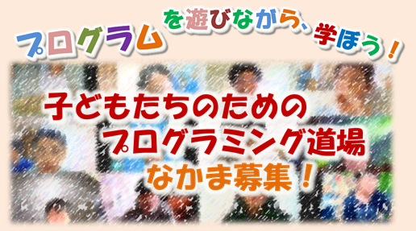
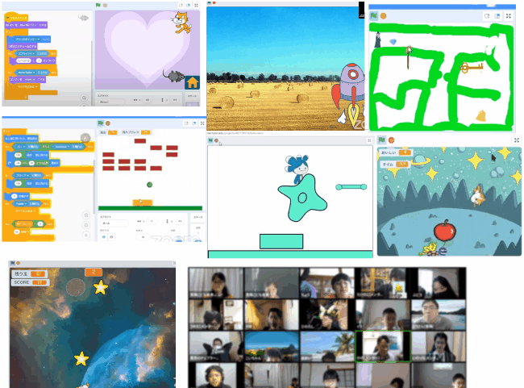
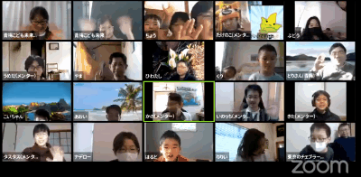
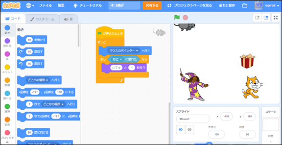
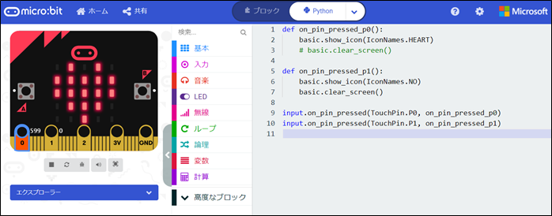
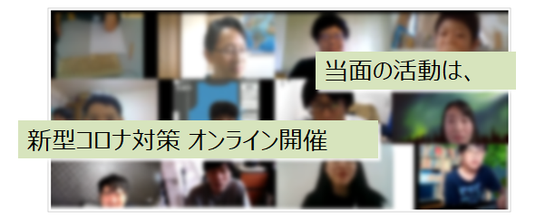

2020年から小学校でプログラミング教育が必修化となりました。今はまだ多くの人が 単なるパソコン教育と誤解されているかも知れません。プログラミングは教えて習得 するよりは自分から学んで得意としていくものであり、また自ら学ぶ子は、同じ趣味 特技の仲間を作ることで成長します。そこで、７～１７歳を対象としたプログラ ミング仲間の集まれる場所作りをしたいと考えています。
「CoderDojo 青梅」何ができるの？ ここで学べること。プログラミングの対象。
ニンジャ参加申込 ニンジャ（プログラミング学習する小中学生）の申し込み方法はこちら。
ボランティア募集 学習をサポートするメンター。道場の運営をサポートするボランティア。
開催予定と申込 次回開催予定日。活動場所。
開催報告 Scratch言語によるプログラミング。

2020年から小学校でプログラミング教育が必修化となりました。 今はまだ多くの人が単なるパソコン教育と誤解されているかも知れません。 プログラミングは教えて習得するよりは自分から学んで得意としていくものであり、 また自ら学ぶ子は、同じ趣味特技の仲間を作ることで成長します。そこで、7～17歳を対象とした プログラミング仲間の集まれる場所作りをしたいと考えています。東京都のCoderDojoとしては最西端になる青梅市で。
プログラミングという共通のテーマを持って、子どもたちが作成したアニメーションやゲームなどの作品を発表できる場所、同じ興味を持った子どもたちの集まる場所を用意します。 小学校から中学生のプログラミング初心者／未経験者向けであり初めての人も心配せずにご参加ください。わからないことや知りたいことがあればメンターに相談することもできます。 パソコン操作が不安という保護者の方には事前のPC操作レクチャーも開催していますので、お問合せください。
同じ興味を持った子どもたちの集まる場所を用意し、みんなで広い知識の習得に励みます。


Scratchほか、何でもOK（micro:bit、ラズパイ、WEBサイト制作、python 等）
▼Scratch

▼micro:bit

今後の企画・運営を計画しています。新型コロナ感染対策のため人数を減らしての開催やオンラインでの開催(zoom利用)を検討します。 ボランティアおよび参加したい子どもを募集しています。開催日はご希望に合わせて調整します。
